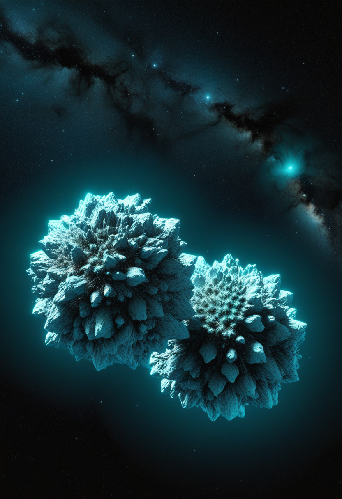
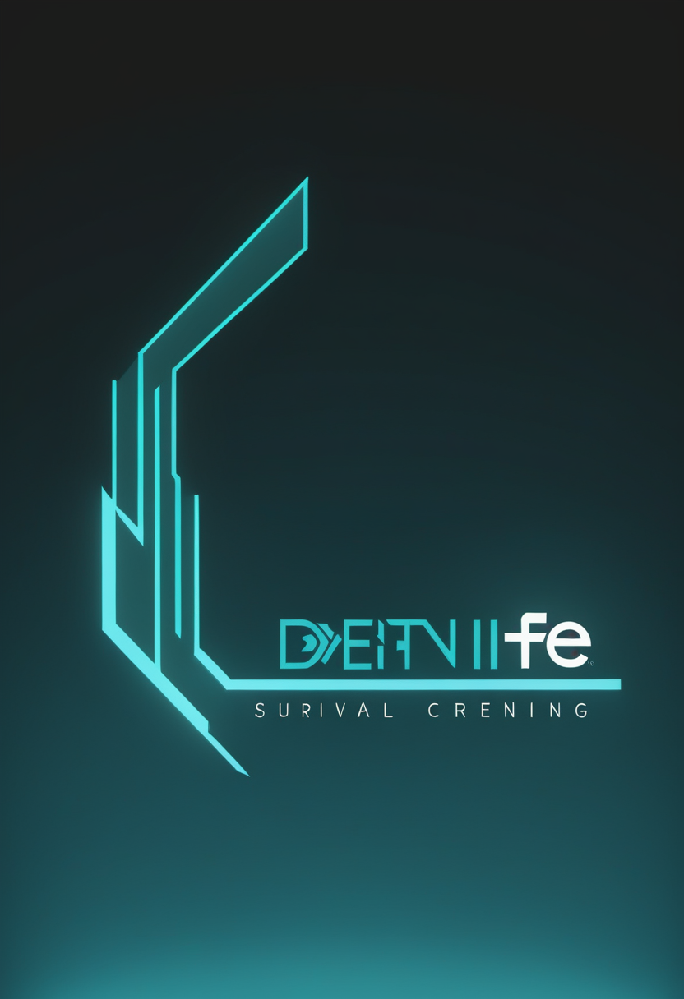
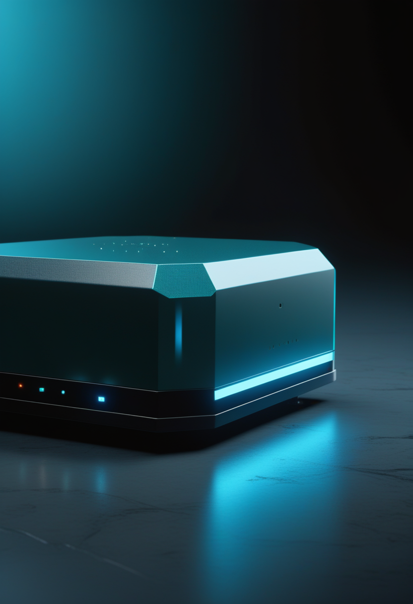
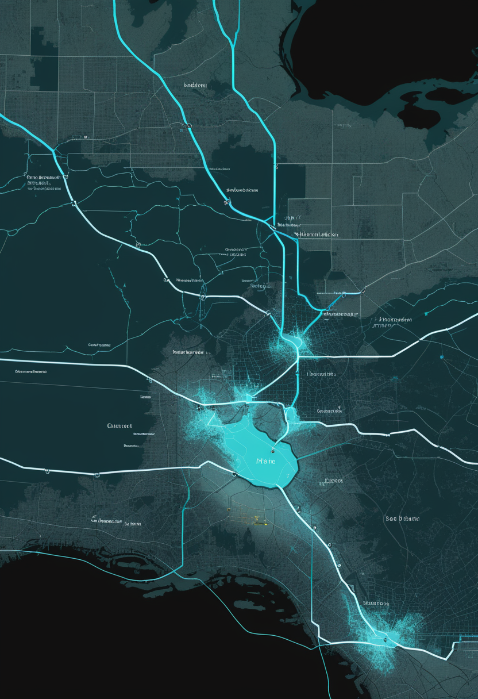
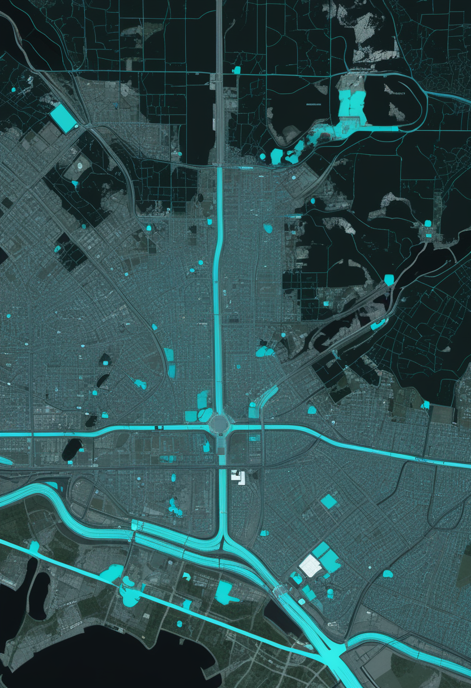
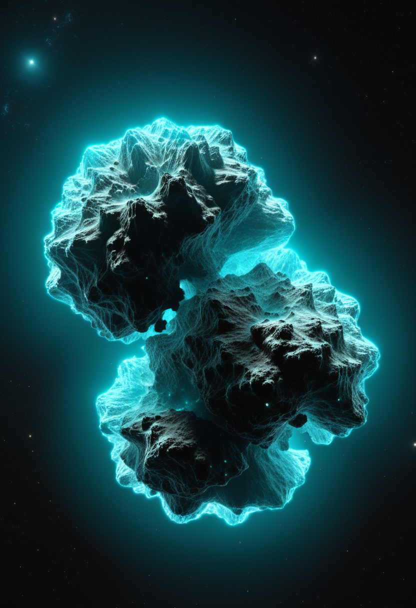
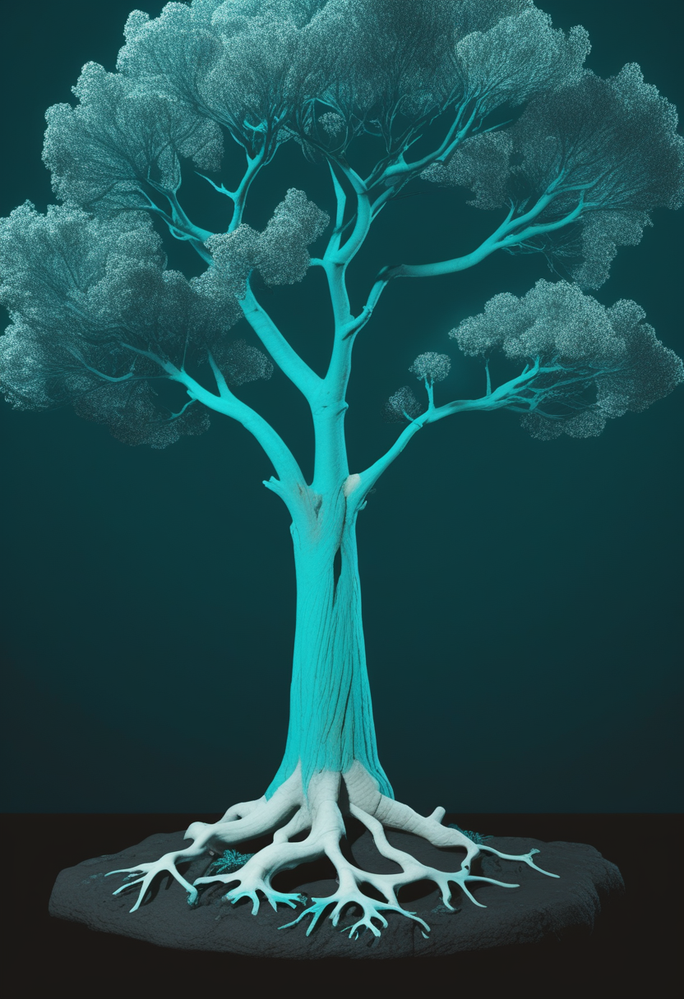
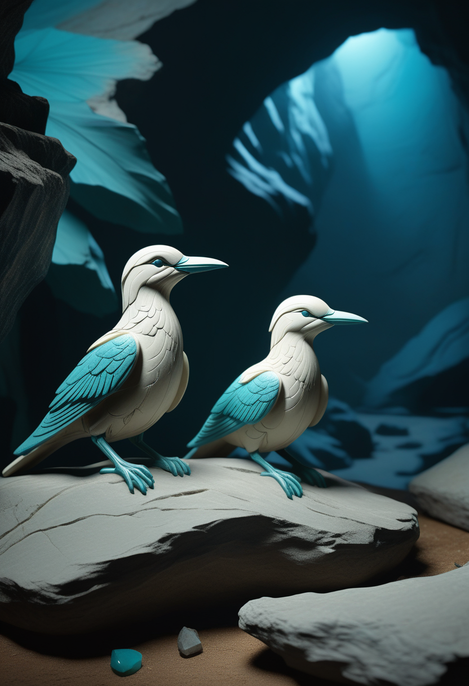

水曜日の便り。ハッブル宇宙望遠鏡とガイア衛星のデータを組み合わせた新しい研究により、天の川銀河がビッグバンから約20億年後、118億年前に別の矮小銀河『LKH』を飲み込んでいたことが8月17日までに確認された。銀河内部に眠る39個の球状星団の年齢と組成を精査し、独立した起源を持つ集団を初めて識別した成果で、天の川の成長史をこれまでより18億年遡らせた。命の章では、BiogenのサラナーセンがMDA2026臨床科学会議でNfLの75%低下という具体的な数字を示し、Cure SMAの最新報告書はSMAの死亡率が過去10年で約60%低下したことを伝えた。自由の章では、NeuralinkのBlindsightで長年全盲だった患者が初めて光の明滅と幾何学的な形を知覚し、Motif Neurotechは治療抵抗性うつ病向けBCIで初の臨床試験承認を得た。基盤の章では、オランダで2020年以来となる自国内感染の西ナイル熱症例が確認され、コンゴのエボラ対応では730人が隔離入院下にあることが分かった。そして美の章では、ベトナムの3,500年前の子どもの骨が梅毒起源説に一石を投じ、ドイツの洞窟からは4万年前の親指サイズの鳥形象牙彫刻が見つかった ― 銀河の記憶も、人の体の記憶も、少しずつ読み解かれている一日だった。

イタリア・ボローニャ天体物理宇宙科学天文台のDavide Massari氏らの国際チームが、ハッブル宇宙望遠鏡による観測データとガイア衛星の測定を組み合わせ、天の川銀河が約118億年前、ビッグバンからおよそ20億年後に矮小銀河『LKH(Low-energy-Kraken-Heracles)』を吸収していたことを示す直接証拠を得たと8月17日に発表した。銀河内部20,000光年四方に分布する39個の球状星団の年齢と金属量を精査したところ、天の川本来の星団集団とは明確に異なる起源を持つ一群を識別できたという。これまで10億年以上前の合体が示唆されてきたが、直接的な証拠が得られたのは今回が初めてで、天の川の成長史はこれまでの想定より18億年遡ることになった。研究はNature Astronomy誌に掲載された。
Biogenのサラナーセン(BIIB115)について、MDA2026臨床科学会議で示された第1b相データの詳細が明らかになった。既にNovartisのZolgensmaで治療を受けた生後6か月〜12歳の小児患者24人のコホートで、神経変性のバイオマーカーである血中ニューロフィラメント軽鎖(NfL)が75%低下し、患者の50%がWHOの運動マイルストーン基準で新たな達成を記録した。副作用は上気道感染・嘔吐・発熱など軽度にとどまった。Biogenは新生児・Zolgensma既治療の乳幼児・未治療またはEvrysdi既治療の思春期以上患者を対象とする3つの独立した第3相試験を設計している。

SMA啓発月間の開始に合わせ、Cure SMAが8月7日に発表した『State of SMA』最新報告書によると、米国のSMA死亡率は過去10年で約60%低下した。診断年齢の中央値は2017年の1.2歳から生後7日にまで短縮され、新生児スクリーニングは2024年に全50州で実施体制が整った。診断から初回治療開始までの平均日数も196日から28日に縮まり、2025年第4四半期時点で米国の患者の約77%がFDA承認治療を利用しているという。ゲノム医療と早期介入の組み合わせが、かつて乳幼児期の主要な遺伝性死因だったSMAの様相を着実に変えつつある。
MDA2026臨床科学会議でシカゴのAnn and Robert H. Lurie Children's Hospitalが発表した研究によると、SMA乳児21人を診断経路別に分析したところ、治療開始までの平均日数は出生前診断で11.3日、新生児スクリーニングで24.8日、症状出現後の診断では49.4日だった。CHOP INTENDとHINE-2の運動機能評価では、SMN2コピー数が多い乳児ほど改善が大きいことも確認された。治療薬そのものの選択肢が出そろった今、生存曲線を左右するのは『何を使うか』以上に『どれだけ早く始められるか』という診断経路の設計に移っている。
サラナーセンの具体的な数字、Cure SMAの10年間の死亡率60%減、そして診断経路ごとの治療開始日数 ― 今日集まった3つのデータは、どれも『SMAはもう治療の可否を争う段階ではなく、どれだけ速く・的確に届けるかを競う段階にある』という同じ結論を指し示している。
Neuralinkの視覚野インプラント『Blindsight』の初期臨床試験で、数十年にわたり完全に失明していた患者が、電極から視覚野への電気刺激によって光の明滅(フォスフィン)や基本的な幾何学模様を知覚したと報告された。カメラ付きグラスで取得した映像をスマートフォンで処理し、無線で頭蓋内インプラントへ送って視覚野を刺激する仕組みで、視神経が損傷していても、あるいは生来失明していても機能しうる点が特徴とされる。同技術は2025年6月にFDAのブレークスルーデバイス指定を受けており、視力の回復を『動けるようにする』『話せるようにする』に続く3つ目の柱に位置づける狙いがある。

ライス大学発のMotif Neurotechは4月28日、治療抵抗性うつ病を対象とした脳コンピュータインターフェース『DOT(Digitally programmable Over-brain Therapeutic)』について、FDAから治験医療機器の適用除外(IDE)を取得し初の臨床試験を実施できるようになったと発表した。ブルーベリー大の無線給電式デバイスを頭蓋骨上の硬膜に接触させずに設置し、うつ病に関わる脳回路へ電気刺激を届ける設計で、開頭手術を伴う従来の刺激装置より侵襲度が低い。Baylor College of Medicineなど複数の医療機関で、複数の治療に反応しなかった成人患者を対象に試験が進められ、ARPA-HのEVIDENTイニシアティブの一環としても追加データが収集される。
Cognixionは、開頭手術を伴わないEEG方式の脳コンピュータインターフェース『Nucleus』とApple Vision Proの視線入力(Eye Tracking)・注視操作(Dwell Control)を組み合わせた実行可能性試験を2025年10月に開始し、2026年4月まで実施した。対象はALS・脊髄損傷・脳卒中・外傷性脳損傷のある患者で、脳信号と視線・頭の動きを組み合わせて自然な会話を実現することを目指す。同社は本試験に続き2026年内にピボタル試験を計画しており、FDAクリアランスを見据える。手術を要さないBCIと視線入力を組み合わせる発想は、侵襲型インプラントとは別の実装路線として注目されている。
BlindsightとDOTは、BCIの応用範囲が『動く・話す』から『見る・気分を整える』へと広がっていることを示す。一方でCognixionのように手術なしで視線とEEGを組み合わせる路線もあり、侵襲度と汎用性のどちらを取るかという分岐は、視線入力という身近な技術ともすぐ隣り合わせにある。
WHOが8月16日に更新した情報によると、コンゴ民主共和国のブンディブジョ型エボラ出血熱では、確定4,945例・死者2,325例に加え、730人が現在も隔離入院下にあることが分かった。WHO事務局長とアフリカ地域事務局長、Africa CDC事務局長は、サーベイランス活動と地域社会との連携強化を優先課題として挙げ、対応拠点となる治療センターを増設し、そこで働く保健・ケア従事者の訓練を進めていると説明した。隣国ウガンダでは7月28日、最後の患者退院から12日が経過したとして流行の終息が宣言されている。

オランダの公衆衛生機関RIVMは8月17日、ユトレヒト州在住の献血者から西ナイルウイルスが検出され、直近の海外渡航歴がないことから同国内での感染とみられると発表した。本人には症状が出ておらず、検査は無症状ドナーを対象とするSanquinのサーベイランス研究の一環で行われた。オランダで西ナイル熱の自国内感染が確認されたのは2020年以来で、同地域では馬や野鳥からもウイルスが検出されており、蚊を介した感染環がオランダ国内で成立していることを裏付けている。Sanquinはユトレヒト州などを輸血の安全確保上のリスク地域に指定した。

オーストラリア農業省(DAFF)は8月12日から、野鳥のH5型鳥インフルエンザに関する報告方式を、検出された個体数の積み上げから、発生事案(アウトブレイク)単位の集計へと切り替えた。新方式による8月5日時点の集計では、南オーストラリア州81件・西オーストラリア州10件・ビクトリア州7件など全国で101件の発生事案が確認されており、家禽や農業分野への広がりは確認されていない。集計方法の変更は、個体ごとの検出報告が増え続ける段階から、地域ごとの流行動態を追う段階へと監視の重心が移ったことを反映している。
エボラの隔離病床、オランダの新規感染ノード、豪州の集計方式転換 ― 3つはいずれも『病原体そのもの』ではなく『対応システムの解像度』についての話であり、封じ込めの成否は最終的に、この地味な運用面の積み重ねにかかっている。

イタリア・ボローニャ天体物理宇宙科学天文台のDavide Massari氏らの国際チームが、ハッブル宇宙望遠鏡とガイア衛星のデータを組み合わせ、天の川銀河が約118億年前に矮小銀河『LKH(Low-energy-Kraken-Heracles)』を吸収していたことを示す直接証拠を得たと8月17日に発表した。銀河内部20,000光年四方に分布する39個の球状星団の年齢と金属量を精査し、天の川本来の星団集団とは異なる起源を持つ一群を識別した。これまで10億年以上前の合体が示唆されてきたが、直接証拠が得られたのは初めてで、天の川の成長史はこれまでの想定より18億年遡ることになった。研究はNature Astronomy誌に掲載された。
NASAは8月10日、ジェイムズ・ウェッブ宇宙望遠鏡(JWST)が撮影した惑星状星雲NGC2392『ライオン星雲』の新しい赤外線画像を公開した。太陽に似た恒星が末期を迎えて外層を放出した後に残る白色矮星が中心で灼熱の放射を放ち、周囲のガスと塵を吹き払ってライオンの顔のような輪郭と『たてがみ』状の塵の塊を形作っている様子が、これまでにない解像度で捉えられている。恒星が一生を終えるときに周囲へ何を残すかを可視化するこの種の観測は、太陽自身の遠い将来の姿を推測する手がかりにもなる。
NASAとESAは8月18日、国際宇宙ステーション(ISS)でNASA宇宙飛行士Anil Menon氏とESA宇宙飛行士Sophie Adenot氏による船外活動を実施したと発表した。米東部時間午前8時29分に開始し午後2時52分に終了した6時間23分の作業で、故障したSpace-to-Groundアンテナの取り外しとトラス構造への長期固定を完了したが、電気ケーブルの取り外しとボルトの緩めに想定以上の時間を要し、交換用アンテナの設置は次回の船外活動へ持ち越された。Adenot氏にとってはフランス人女性として初めての船外活動となった。
118億年前の銀河合体も、今日ISSの外で行われたアンテナ交換も、スケールはまるで違うが同じ営みの延長線上にある ― 壊れたもの・欠けたものを、気の遠くなるほど地道な作業で一つずつ直していく、その積み重ねが『畏敬』を支えている。

チャールズ・スタート大学のMelandri Vlok氏らオーストラリア・ベトナムの国際チームが、ベトナム国内16遺跡・309体(約1万〜1千年前)を分析し、うち3人の子どもの骨に先天性トレポネーマ感染症の診断的所見を認めたとする論文をInternational Journal of Osteoarchaeology誌に発表した(8月12日)。うち2人は北部Man Bac遺跡の出土で、歯と骨に少なくとも3,500年前まで遡る特徴的な病変が残っていた。集団全体の感染パターンは性感染症である梅毒よりも、母子感染しうる非性感染性のフランベジア(イチゴ腫)を示唆しており、これまで『先史時代の梅毒』とされてきた多くの骨が、実はフランベジアだった可能性を指摘している。

テュービンゲン大学のNicholas Conard氏らのチームが、南西ドイツ・シュヴァーベンアルプのHohle Fels洞窟(ユネスコ世界遺産)で、マンモスの牙から彫られた約4万年前(オーリニャック期)の鳥形象を2体発見したと発表した。2025年の発掘中、Elisa Luzi氏が約1.5メートル離れた同じ地層から相次いで見つけたもので、大きさは1インチ(約2.5cm)未満・重さ1オンス未満と、同時代の象牙彫刻(通常3〜9cm)の中でも最小級にあたる。一体はうずくまる鳥、もう一体は翼を広げた鳥を表しているとみられ、同じ作り手による作品の可能性が指摘されている。現在はBlaubeurenの先史・氷河期美術博物館で展示中。
カリフォルニア大学バークレー校のPriya Moorjani氏らのチームが、化石DNAに依存せず現代人500人超のゲノムを系統的に解析する新手法により、人類進化史に痕跡だけを残す2つの絶滅『幽霊系統』を特定したとする論文を7月30日、Science誌に発表した。1つは約5万年前、ホモ・サピエンスがアフリカを出る前に交雑した系統で現代人ゲノムの約1%を占め、Homo heidelbergensisの可能性がある。もう1つは約180万年前に遡る古い系統で、デニソワ人を介してオセアニア地域の人々のゲノムに間接的に受け継がれており、Homo erectusとの関連が指摘されている。化石証拠が一切残っていない絶滅人類集団についても、生きている人のDNAだけから輪郭を描けることを示した成果である。
3,500年前の骨が語る病の歴史、4万年前の牙に刻まれた小さな鳥、そして化石を一切残さず現代人のDNAだけに痕跡を残した2つの幽霊祖先 ― 過去を読み解く技術が更新されるたびに、人類史は単純な系統樹から、より複雑な混合の網へと描き直されている。
ハッブル宇宙望遠鏡とガイア衛星のデータにより、天の川銀河が約118億年前に矮小銀河『LKH』を吸収していたことを示す直接証拠が8月17日に確認され、銀河の成長史はこれまでの想定より18億年遡ることになった。命の章では、Biogenのサラナーセンが第1b相試験でNfLの75%低下という具体的な数字を示し、Cure SMAの最新報告書はSMAの死亡率が過去10年で約60%低下したと伝えた。自由の章では、NeuralinkのBlindsightで全盲患者が初めて光の明滅を知覚し、Motif Neurotechは治療抵抗性うつ病向けBCIで初の臨床試験承認を得た。基盤の章では、オランダで2020年以来となる西ナイル熱の自国内感染例が確認され、コンゴのエボラ対応では730人が隔離入院下にあることが分かった。畏敬の章では、JWSTがライオン星雲の新画像を公開し、ISSでは船外活動でアンテナ交換が試みられた。そして美の章では、ベトナムの3,500年前の子どもの骨が梅毒起源説に一石を投じ、ドイツの洞窟からは親指サイズの氷河期彫刻が見つかった ― 銀河の記憶も、人の体に刻まれた記憶も、少しずつ読み解かれている一日だった。
では、また明日の朝に。 — JaH